File: 000300.gt.txt (if the image is defective, simply delete all Arabic text and the line will be excluded)
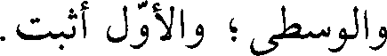
والوسطى؛ والأول أثبت.
File: 000301.gt.txt (if the image is defective, simply delete all Arabic text and the line will be excluded)
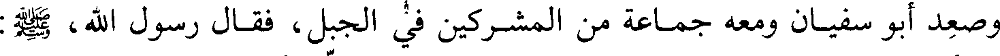
وصعد أبو سفيان ومعه جماعة من المشركين في الجبل، فقال رسول الله، صلى الله عليه وآله وسلم:
File: 000302.gt.txt (if the image is defective, simply delete all Arabic text and the line will be excluded)
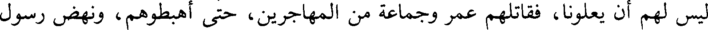
ليس لهم أن يعلونا، فقاتلهم عمر وجماعة من المهاجرين، حتى أهبطوهم، ونهض رسول
File: 000303.gt.txt (if the image is defective, simply delete all Arabic text and the line will be excluded)
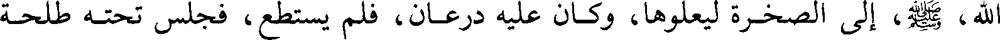
الله، صلي الله عليه و سلم، إلى الصخرة ليعلوها، وكان عليه درعان، فلم يستطع، فجلس تحته طلحة
File: 000304.gt.txt (if the image is defective, simply delete all Arabic text and the line will be excluded)
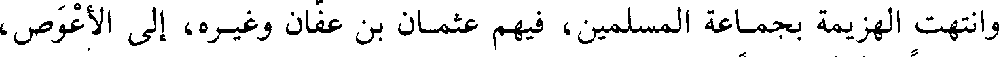
وانتهت الهزيمة بجماعة المسلمين، فيهم عثمان بن عفان وغيره، إلى الأعوص،
File: 000305.gt.txt (if the image is defective, simply delete all Arabic text and the line will be excluded)
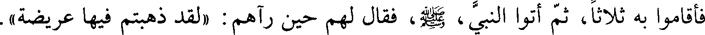
فأقاموا به ثلاثا، ثم أتوا النبي، صلي الله عليه و سلم، فقال لهم حين رآهم: (لقد ذهبتم فيها عريضة).
File: 000306.gt.txt (if the image is defective, simply delete all Arabic text and the line will be excluded)
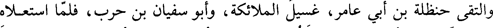
والتقى حنظلة بن أبي عامر، غسيل الملائكة، وأبو سفيان بن حرب، فلما استعلاه
File: 000307.gt.txt (if the image is defective, simply delete all Arabic text and the line will be excluded)
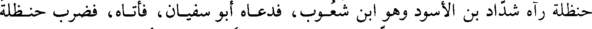
حنظلة رآه شداد بن الأسود وهو ابن شعوب، فدعاه أبو سفيان، فأتاه، فضرب حنظلة
File: 000308.gt.txt (if the image is defective, simply delete all Arabic text and the line will be excluded)
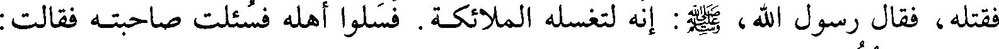
فقتله، فقال رسول الله، صلى الله عليه وآله وسلم: إنه لتغسله الملائكة. فسلوا أهله فسئلت صاحبته فقالت:
File: 000309.gt.txt (if the image is defective, simply delete all Arabic text and the line will be excluded)
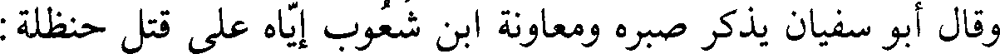
وقال أبو سفيان يذكر صبره ومعاونة بن شعوب إياه على قتل حنظلة:
File: 000310.gt.txt (if the image is defective, simply delete all Arabic text and the line will be excluded)
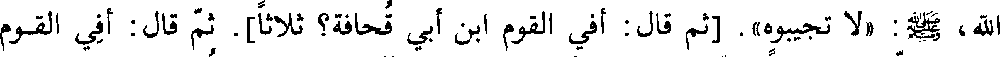
الله صلى الله عليه وآله وسلم (لا تجيبوه). [ثم قال: أفي القوم ابن أبي قحافة؟ ثلاثا]. ثم قال: أفي القوم
File: 000311.gt.txt (if the image is defective, simply delete all Arabic text and the line will be excluded)
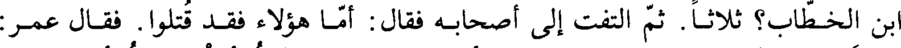
بن الخطاب؟ ثلاثا ثم التفت إلى أصحابه فقال أما هؤلاء فقد قتلوا. فقال عمر:
File: 000312.gt.txt (if the image is defective, simply delete all Arabic text and the line will be excluded)
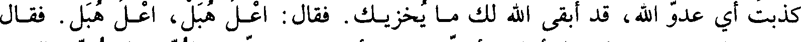
كذبت أي عدو الله، قد أبقى الله لك ما يخزيك. فقال: اعل هبل، اعل هبل. فقال
File: 000313.gt.txt (if the image is defective, simply delete all Arabic text and the line will be excluded)
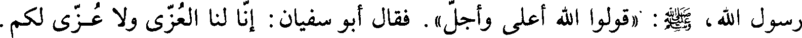
رسول الله، صلى الله عليه وآله وسلم:( قولوا الله أعلى وأجل). فقال أبو سفيان: إن لنا العزى ولا عزى لكم.
File: 000314.gt.txt (if the image is defective, simply delete all Arabic text and the line will be excluded)
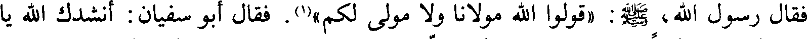
فقال رسول الله، صلى الله عليه وآله وسلم، (قولوا الله مولانا ولا مولى لكم)(1). فقال أبو سفيان: أنشدك الله يا
File: 000315.gt.txt (if the image is defective, simply delete all Arabic text and the line will be excluded)
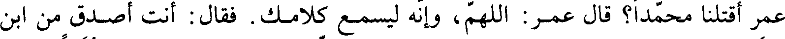
عمر أقتلنا محمدا؟ قال عمر: اللهم، لا وإنه ليسمع كلامك. فقال: أنت أصدق من ابن
File: 000316.gt.txt (if the image is defective, simply delete all Arabic text and the line will be excluded)
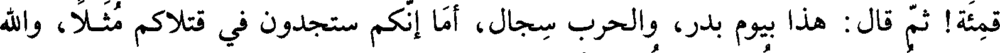
قمئة! ثم قال: هذا بيوم بدر، والحرب سجال، أما أنكم ستجدون في قتلاكم مثلا، والله
File: 000317.gt.txt (if the image is defective, simply delete all Arabic text and the line will be excluded)
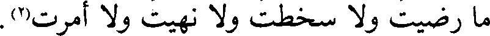
ما رضيت ولا سخطت ولا نهيت ولا أمرت(29).
File: 000318.gt.txt (if the image is defective, simply delete all Arabic text and the line will be excluded)
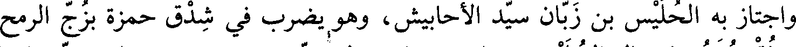
واجتاز به الحليس بن زبان سيد الأحابيش، وهو يضرب في شدق حمزة بزج الرمح
File: 000319.gt.txt (if the image is defective, simply delete all Arabic text and the line will be excluded)
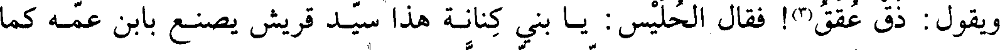
ويقول: ذق عقق(3)! فقال الحليس: يا بني كنانة هذا سيد قريش يصنع بابن عمه كما
File: 000320.gt.txt (if the image is defective, simply delete all Arabic text and the line will be excluded)
وكانت أم أيمن حاضنة رسول الله، صلي الله عليه و سلم، ونساء من الأنصار يسقين الماء، فرماها
File: 000321.gt.txt (if the image is defective, simply delete all Arabic text and the line will be excluded)
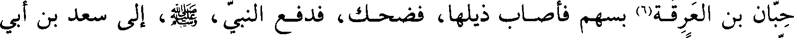
حبان بن العرقة(6) بسهم فأصاب ذيلها، فضحك، فدفع النبي، صلى الله عليه وآله وسلم، إلى سعد بن أبي
File: 000322.gt.txt (if the image is defective, simply delete all Arabic text and the line will be excluded)
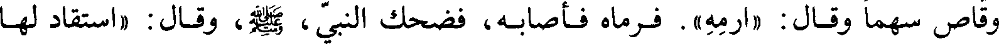
وقاص سهما وقال: (ارمه). فرماه فأصابه، فضحك النبي، صلى الله عليه وآله وسلم، وقال: استقاد لها
File: 000323.gt.txt (if the image is defective, simply delete all Arabic text and the line will be excluded)
سعد، أجاب الله دعوتك وسدد رميتك).
File: 000324.gt.txt (if the image is defective, simply delete all Arabic text and the line will be excluded)
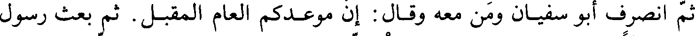
ثم انصرف أبو سفيان ومن معه وقال: إن موعدكم العام المقبل. ثم بعث رسول
File: 000325.gt.txt (if the image is defective, simply delete all Arabic text and the line will be excluded)
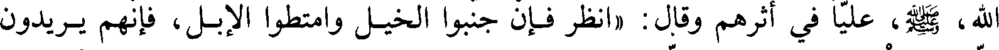
الله، صلى الله عليه وآله وسلم، عليا في أثرهم وقال: (انظر فإن جنبوا الخيل وامتطوا الإبل، فإنهم يريدون
File: 000326.gt.txt (if the image is defective, simply delete all Arabic text and the line will be excluded)
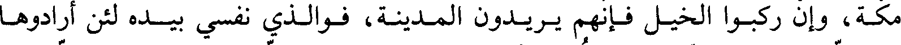
مكة، وإن ركبوا الخيل فإنهم يريدون المدينة، فوالذي نفسي بيده لئن أرادوها
File: 000327.gt.txt (if the image is defective, simply delete all Arabic text and the line will be excluded)
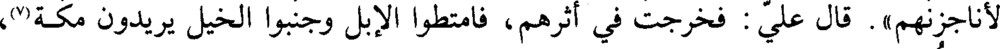
لأناجزنهم). قال علي: فخرجت في أثرهم، فامتطوا الإبل وجنبوا الخيل يريدون مكة(7)،
File: 000328.gt.txt (if the image is defective, simply delete all Arabic text and the line will be excluded)
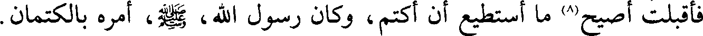
فأقبلت أصيح(8) ما أستطيع أن اكتم، وكان رسول الله، صلى الله عليه وآله وسلم، أمره بالكتمان.
File: 000329.gt.txt (if the image is defective, simply delete all Arabic text and the line will be excluded)
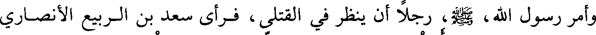
وأمر رسول الله، صلى الله عليه وآله وسلم، رجلا أن ينظر في القتلى، فرأى سعد بن الربيع الأنصاري
To Save: `Ctrl+s`, make sure to choose `Webpage, complete`!